Import/Export
Open Modules > Import/Export to move the supported objects between installations or tenants. Export a backup of target objects before importing replacements. During document import, map each engine to its matching type: Dashboard and Cockpit remain distinct in 9.1.
This functionality allows to import/export items belonging to Gallery, Documents, Menu, Users, KPIs and Catalogs. After exporting, the user can import the information previously extracted into a different Knowage installation or tenant.
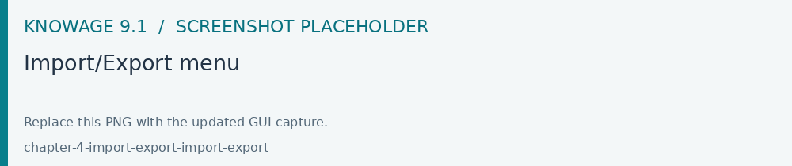
Fig. 644 Import/Export menu
Artifacts
Export
It is possible to export widgets and functions to a zip file to use afterwards as a source to be imported to a different environment. As shown below, select the items of your interest and click on EXPORT.
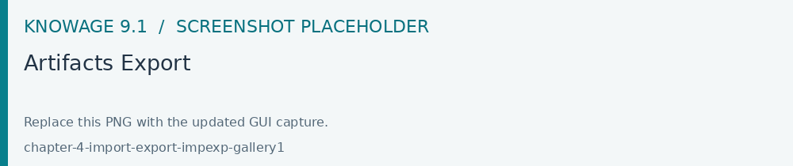
Fig. 645 Artifacts Export
Fig. 646 Artifacts Export - Items selection
After the selection, give a name to the file and confirm with Export button.
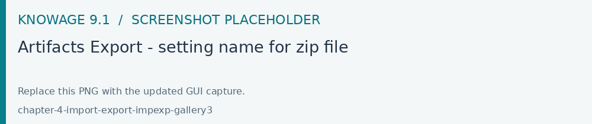
Fig. 647 Artifacts Export - setting name for zip file
Import
You can import the zip file formerly exported just clicking on IMPORT and then clicking the CHOOSE button to select the file. See below image: You can also drag the file.
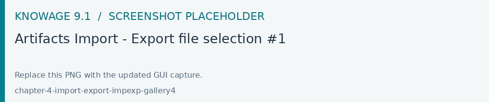
Fig. 648 Artifacts Import - Export file selection #1
After selecting the file to import the NEXT button will became available.
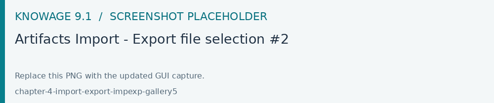
Fig. 649 Artifacts Import - Export file selection #2
Clicking on NEXT, it is possible to see and select the items to be imported..
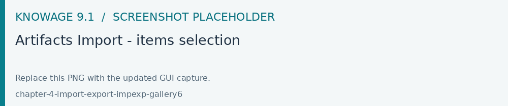
Fig. 650 Artifacts Import - items selection
Click on the IMPORT button to make selected widgets and functions available in the new environment.
Documents
This feature allows to download a zip file of the whole or a part of the documents existing in your Knowage installation.
Below, you can see how the export editor looks like.
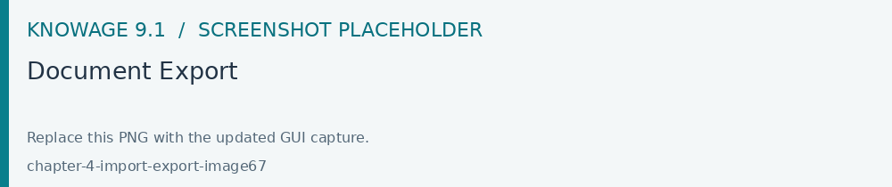
Fig. 651 Document Export
Fill in the name of your export and select which documents to export. You can browse through folders by clicking on the relative icon. Check the items to include in the file. The export icon changes colour from grey to pink. After clicking the Export button you can decide whether to include or not the following options:
- Export the document only in the selected functionality
By checking this property, the export will include documents only if they are inside a selected functionality.
- Related documents
By checking this property, the export will include all those documents linked through the cross navigation to the selected documents.
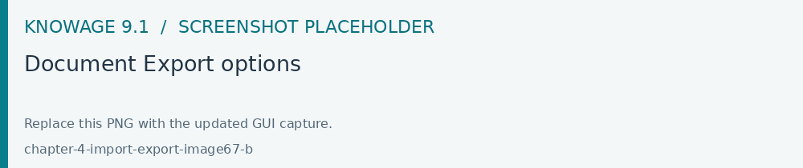
Fig. 652 Document Export options
To import documents click on the IMPORT link, choose or drag your file and click the NEXT button.
Fig. 653 Document Import
You will be asked to map Roles, Engines, Datasources and Metadata from Source to Target. After compliting all the steps to Metadata, you can start the import.
Fig. 654 Document Import Wizard
If a role does not match any of the existing ones, the role will be created. Please bear in mind that all the target metadata with the same label i.e. documents, lovs, drivers will be overwritten when importing.
Users
This functionality allows to export/import users from one installation/tenant to another.See the image below.
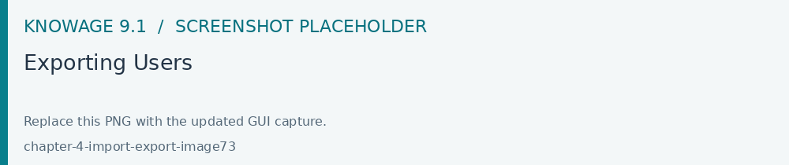
Fig. 658 Exporting Users
To generate the zip file, fill in the name of your file and select the users to include. You can also include the personal folder of the users just checking the option Export Personal folder.
To import your zip file, log in and select Users from Import\Export. Switch to the Import tab and click on Browse . Choose the file and click on the import icon. The list of users contained in your file are uploaded. Make your selection and click on the arrow to move them to the other side. Now click on the Start import button and your users will be created. See figure below.
Fig. 659 Importing Users
Important
All users involved in the import procedure will have the password changed with the value set in Advanced configuration.
Catalogs
This functionality allows to Export/Import the following elements:
Datasets,
Business models,
Mondrian catalogs,
Layers
The details are shown in the below figure.
Fig. 660 Exporting Catalogs
To generate the zip file, mark the items to include and fill in the export name. Save the export file in your local system.
To import a zip file, log in to the source tenant, select Catalogs from the Import/Export menu and switch to the Import tab. Click on Browse and choose the file previously created through the exportation. Uploading the file, the list of available catalogs are displayed. Choose the ones to be imported, decide if you want to override them or just add the missing ones and then click on Start import. Your catalogs will be created in this environment.
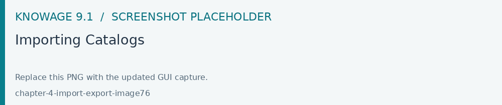
Fig. 661 Importing Catalogs
KPIs
In this section we describe how to manage the import/export of KPIs between two tenants.
The user must enter Knowage as administrator of the source tenant and click on KPIs from the Import/Export menu panel.
The page contains the Export and the Import tab, where the user can select the KPIs for the export/import respectively.
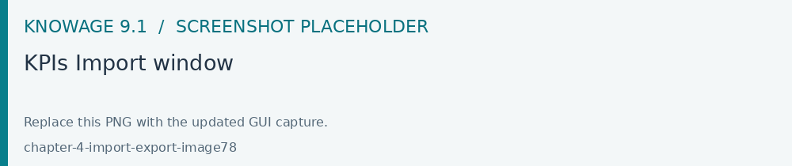
Fig. 662 KPIs Import window
Let’s start from the export feature. The user at first selects the KPIs to be exported and in addition can include:
targets,
the scorecards related to the selected KPIs,
schedulations.
Click on the download icon to get the zip file.
Once the zip file is downloaded, the user has to switch to the tenant used for the import and as admin enter the Import/Export KPIs functionality and move to the Import tab.
The user must therefore browse the personal folder to catch the zip file and click on the red upload button, as shown below.
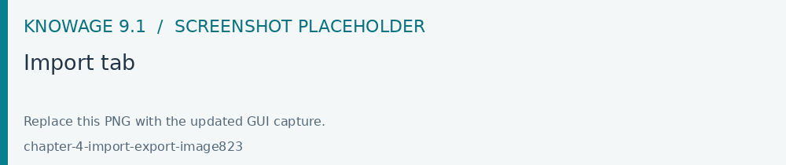
Fig. 663 Import tab
Referring to the following image, the user has to specify if:
overwriting the existing KPIs and their related formulas
importing targets,
importing scorecards,
importing schedulations.
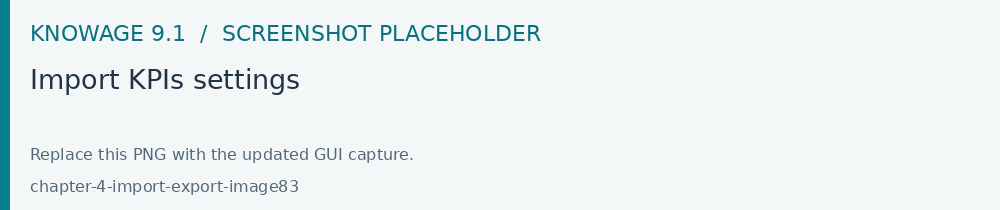
Fig. 664 Import KPIs settings
Once the import is started, the GUI leads the user to finalize the import procedure.
Analytical Drivers
This option allows to import/export the analytical drivers and their related LOVs.
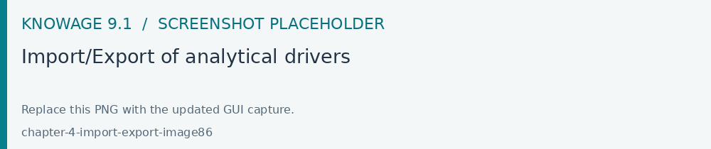
Fig. 665 Import/Export of analytical drivers
As shown in figure above, the window contains the Export and the Import tab. Use the Export tab to download the zip file to be used in the import process.
Afterwards:
log in as administrator to the source tentant,
assign a name to the export,
select the analytical drivers of your interest and
click the download icon, available at the top right corner of the page to get the zip file.
It is possible to narrow the search of the analytical drivers by filtering on their creation date.
Switch to the target tenant and log in as administrator. Use the Import tab to upload the zipped folder and finalize the import.
Use the GUI to upload the zip file and specify if overwriting the existing analytical drivers or just adding the missing ones. Then click on NEXT and continue by mapping roles between the source and the target tenants.
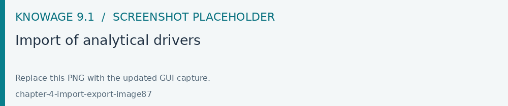
Fig. 666 Import of analytical drivers
The process ends with a message containing the information about the import.
Glossary
The export/import of glossary allows the user to align glossaries among tenants.
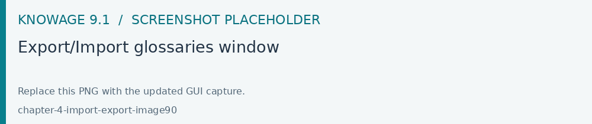
Fig. 667 Export/Import glossaries window
In the Export tab, the user is asked to select the glossaries to export and type a name that will be assigned to the zip file. The searching functionality can be used for the selection of the glossaries. Use the download icon to get the zip file.
By connecting with admin privileges to a target tenant, the user selects the Import tab from the Export/Import main window. once selected the zip file through the browsing button just click the uploading icon.
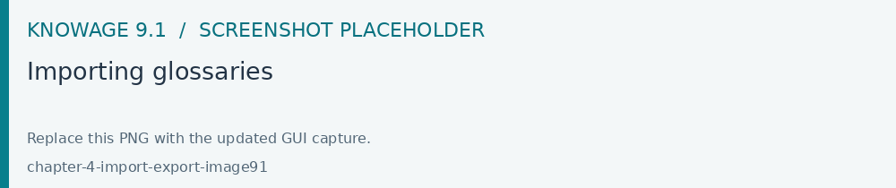
Fig. 668 Importing glossaries
Arrows are used to indicate the glossaries to consider for the import.